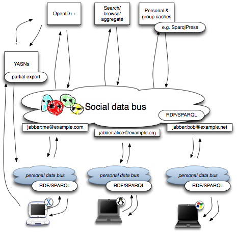

JQbus uses off-the-shelf Jabber chat services as a generic information bus, passing SPARQL queries and results via user accounts, encoded as XMPP IQ messages.
See the README.txt for overview, CHANGES.txt for progress reports, and the javadoc for API detail. This is experimental code; assume nothing works, and maybe you'll be pleasantly suprised. This code began with a conversation with Peter Saint-Andre about binding SPARQL to Jabber, and an implementation I started and Leigh Dodds kindly helped clean up. Chris Schmidt has a nice implementation of Peter's original design using Python/Redland. This Java implementation uses a slightly different binding. Hopefully we can converge these and other implementations...
We've all been drawing such diagrams for years. The justification for this one is as a way to explain how "Semantic Desktop" efforts might plug into a story for broader access to personal data on the Semantic Web. Loosly: efforts like Nepomuk-KDE and Gnowsis are providing an RDF view of much desktop data, through which descriptions of photos, audio/video, calendars, addressbooks etc might be made available - selectively - to friends, colleagues and software working on behalf of those people. JQbus is an experimental toy for exposing desktop data in this fashion, using off-the-shelf Jabber accounts. The other services sketched in the diagram are part of a bigger unwritten story for how this infrastructure facilitates decentralised social networks. Short version: social networks are about people, not commercial websites. They can't be bought nor sold, nor fenced in :) But anyway...

From RFC-3920:
Info/Query, or IQ, is a request-response mechanism, similar in some ways to HTTP. The semantics of IQ enable an entity to make a request of, and receive a response from, another entity. The data content of the request and response is defined by the namespace declaration of a direct child element of the IQ element, and the interaction is tracked by the requesting entity through use of the 'id' attribute.
The README has more details on the protocol. To be real sure, see the code. Sorry! :)
This diagram gives an overview of the Jabber conversations undertaken by an installation playing the "server" role; since it is a real Jabber account, other things can also be seen. This gives an idea of the data environment in which this code finds itself (eg. presence info from friends on the roster aka buddylist).
There is Java src in subversion in Subversion. The downloads area should have latest code bundle. There have been no numbered releases yet.
Even stalkers and historians have better things to do than read the pre-Subversion cvs logs. Forgive me for not migrating them. And thanks once more to Leigh Dodds for cleaning up that old mess!
Read the README. Or if you're feeling lucky:
wget -nd http://svn.foaf-project.org/foaftown/downloads/jqbus-latest.tar.gz tar -zxvf jqbus-latest.tar.gz cd jqbus/ # Configure accounts (server_jid and client_jid): vi src/com/xmlns/foaftown/FoafJabberNode.java # Run in server role: # ant -Dfoaftown.pwd=xxxxxx -Dfoaftown.role=server # Run in client role (wait 30 secs for the server, and do this in another terminal window): # ant -Dfoaftown.pwd=xxxxxx -Dfoaftown.role=client # Gasp in amazement as stuff scrolls up the screen... # ...
Dan Brickley, danbri@danbri.org or danbrickley@gmail.com if you're not on my whitelist yet.